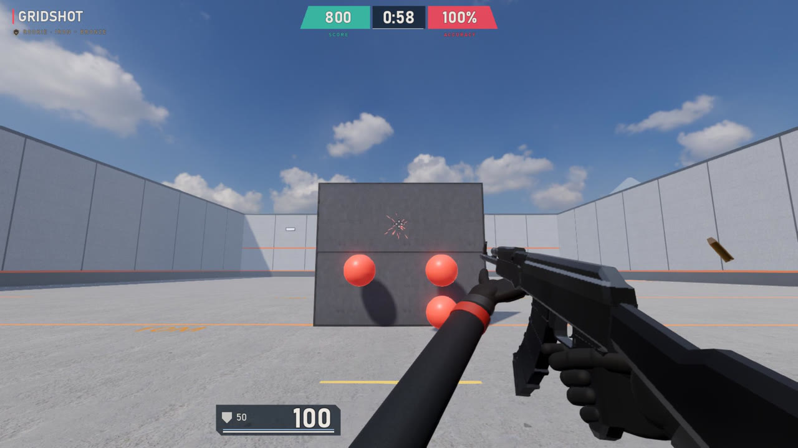

Settings import
Plays with your VALORANT settings
ValTrainer reads VALORANT's settings files each time it starts. It only reads them, never changes them, and works the same whether VALORANT is running or not.
- Aim: sensitivity plus scoped and ADS multipliers, with VALORANT's math (0.07° per count × sens, 103° horizontal FOV) and raw mouse input, so your cm/360 is identical.
- Look: your crosshair profile, pixel for pixel, with movement and firing error, and your enemy highlight colour.
- Controls: movement, walk, crouch, jump and ability keybinds, and hold or toggle scope.
- Display: resolution, display mode, monitor, VSync and FPS cap.
No VALORANT on this PC? ValTrainer uses VALORANT's defaults and you set your sens in Settings. Several accounts on one PC? Pick one in Settings.